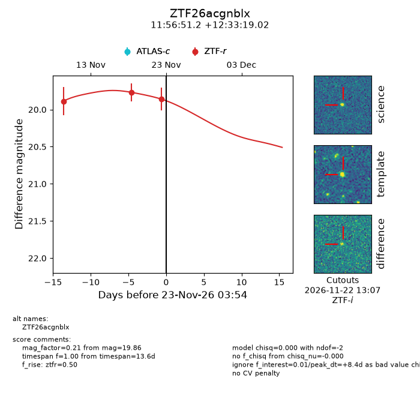
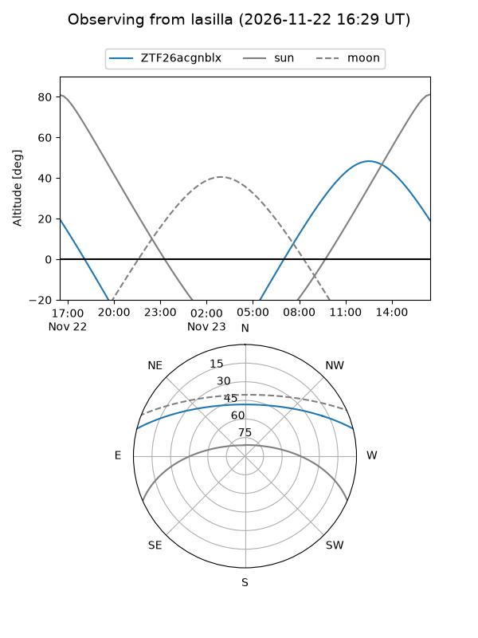
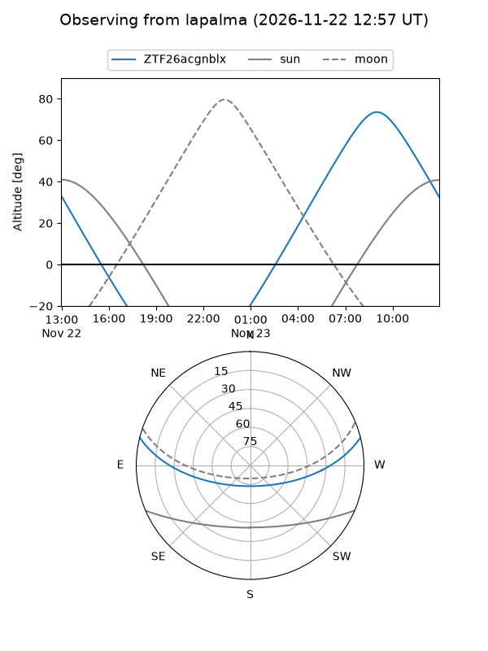
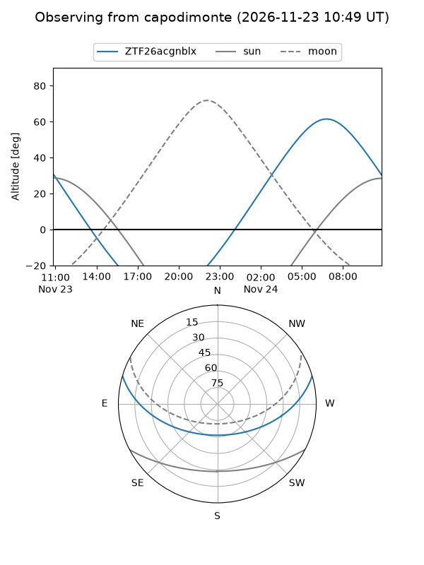
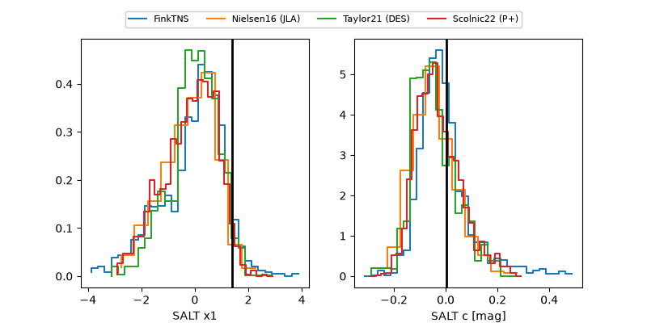

ZTF26acgnblx
Target ZTF26acgnblx at 2026-11-23 15:50
Aliases and brokers:
FINK-ZTF: ztf.fink-portal.org/ZTF26acgnblx
Lasair-ZTF: lasair-ztf.lsst.ac.uk/objects/ZTF26acgnblx
ALeRCE-ZTF: alerce.online/object/ZTF26acgnblx
Direct TNS query: direct search
alt names
ZTF26acgnblx (ztf,fink_ztf)
Coordinates:
equatorial (ra, dec) = 179.2134,+12.55528
equatorial (HMS+DMS) = 11:56:51.23,+12:33:19.02
galactic (l, b) = (259.0022,+70.61437)
Flags:
peak dt: +8.9
Photometry:
last ztfr=19.86
3 ztfr detections
Lightcurve

Visibility



Additional plots
